Dignity
People are represented with respect, context and care.
The philanthropic work of the Office and its leadership is grounded in listening, practical support and respect for the people and traditions that give communities their strength.
Discuss a Community Partnership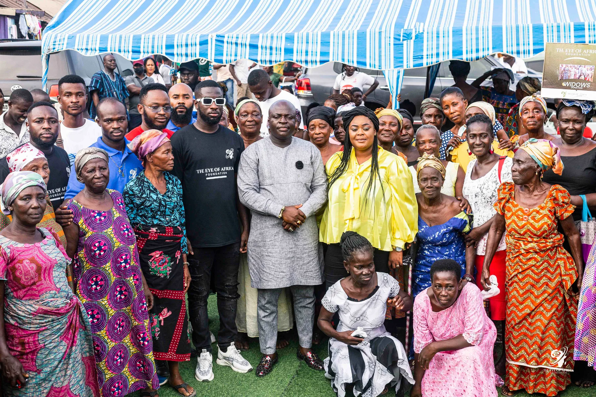
The Eye of Africa photographs on this page document community-focused philanthropic engagements. They are presented exclusively in this section and do not represent commercial assignments, business delegations or official public functions.
People are represented with respect, context and care.
Community voices and local relationships remain central to the work.
Philanthropic engagement is approached as a responsibility, not a single public moment.
The station was built and donated to strengthen safety and access to police services for the Koforidua Technical University community and its surrounding area.
Built and donated by Oseadeeyo Dr. Nana Kumi Kodie I and Hon. Michael Okyere Baafi, the facility was commissioned on 7 February 2025 and is presented here as part of the Private Office's community work.
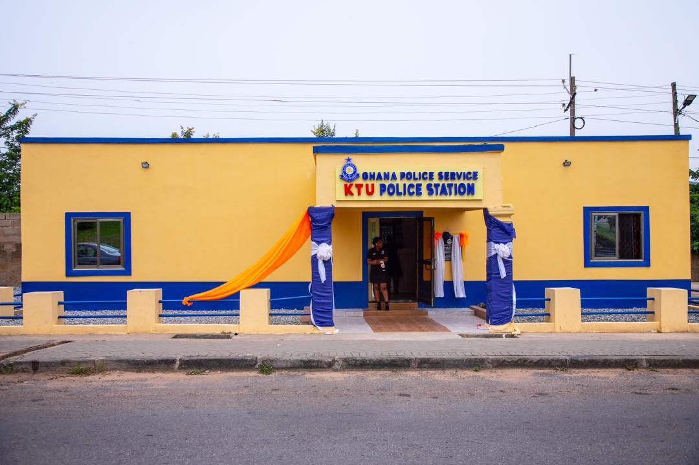
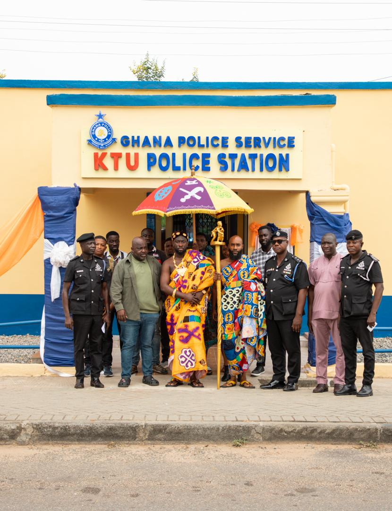
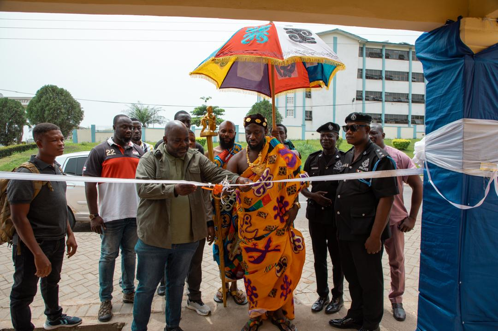
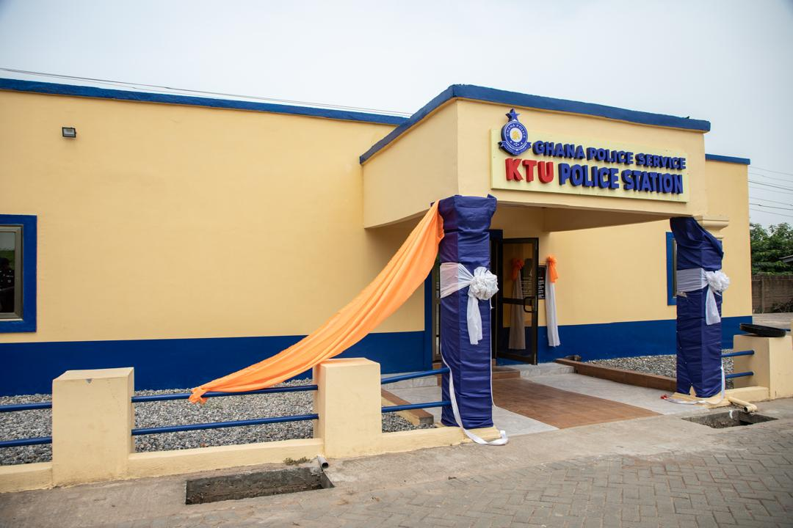
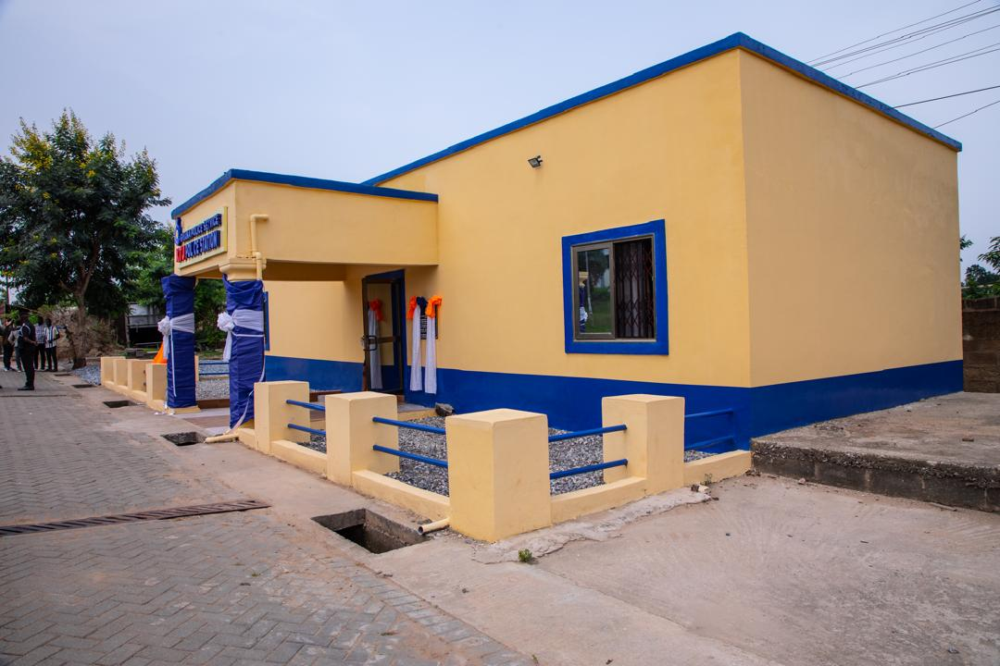
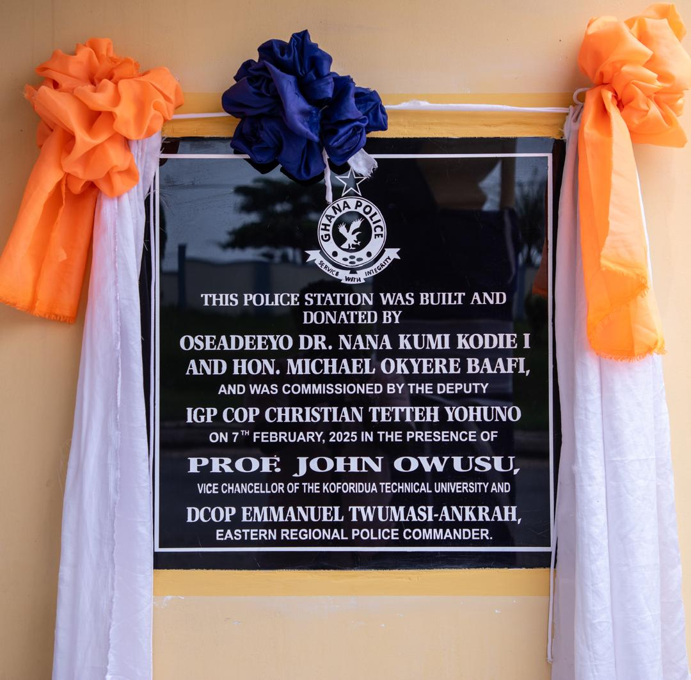
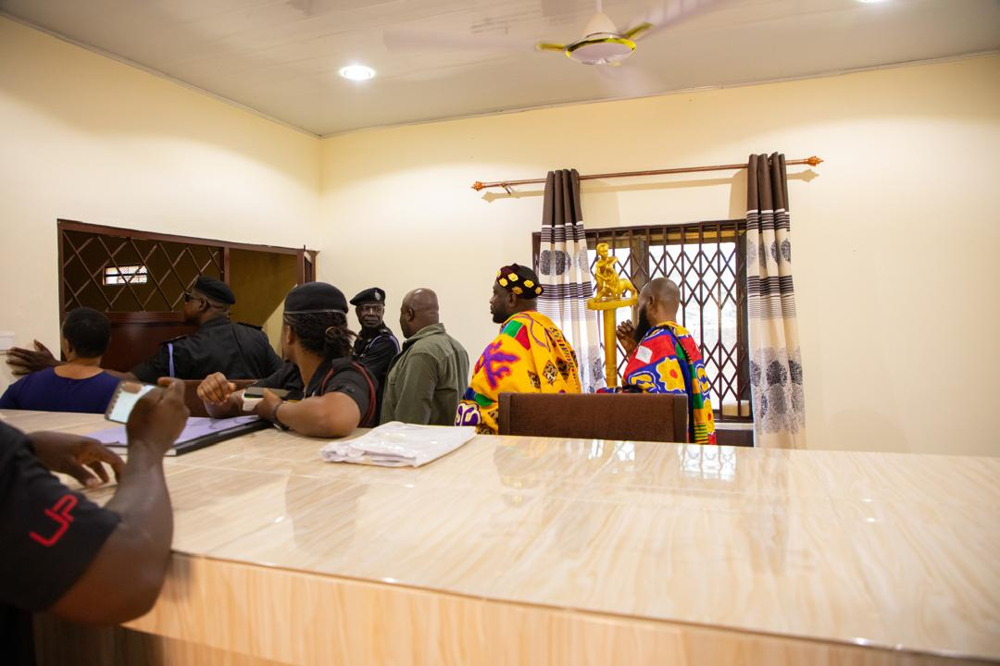
A visual record of participation, cultural connection and practical community engagement.
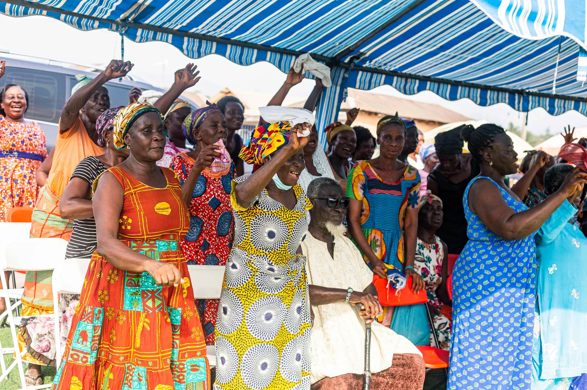
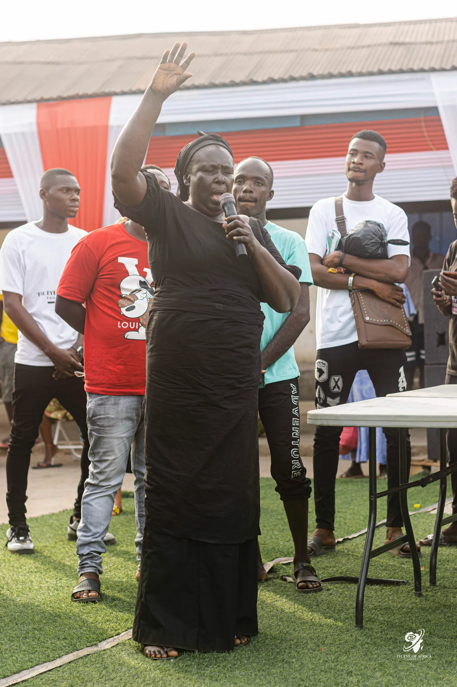
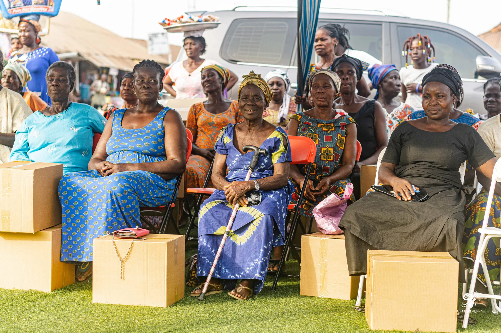
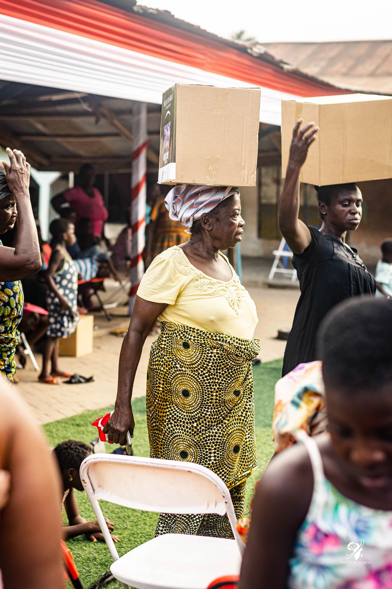
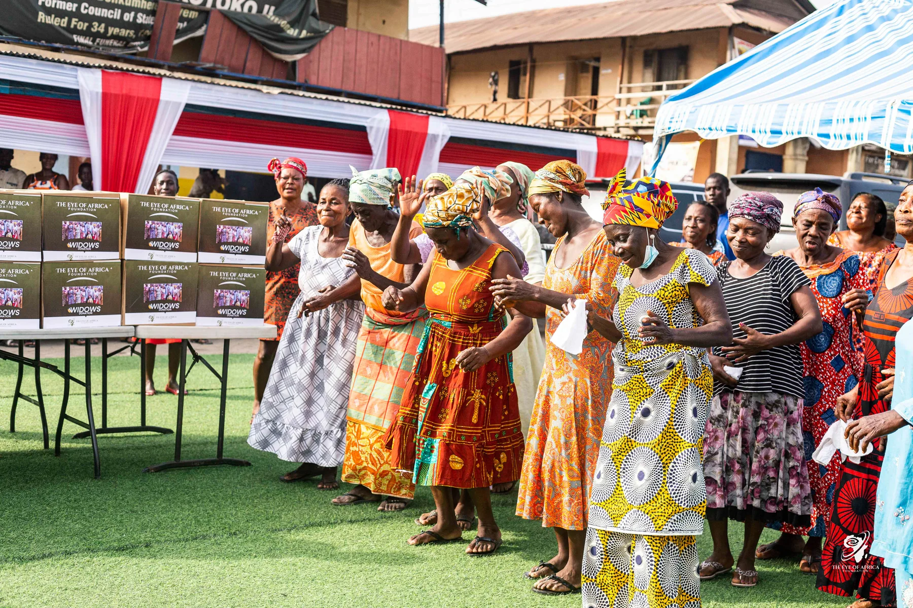
These engagements are not presented as corporate transactions. They reflect a separate commitment to community well-being, participation and the dignity of the people involved.
Publication is selective and responsible: programmes, partners and outcomes are presented only when the information has been verified and the people involved can be represented with appropriate care.
Tell us what your organisation is seeking to achieve in Ghana. We will review the objective, scope and proposed timing before suggesting a responsible next step.